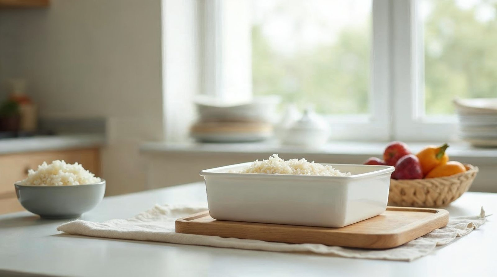
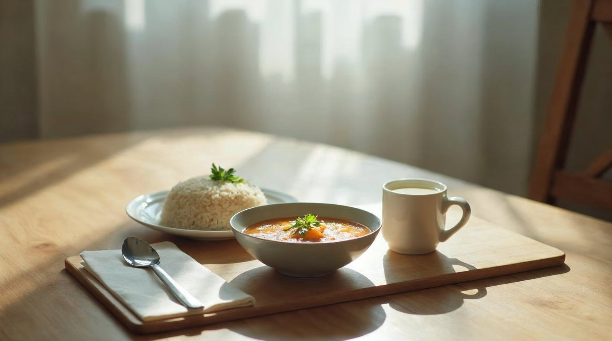
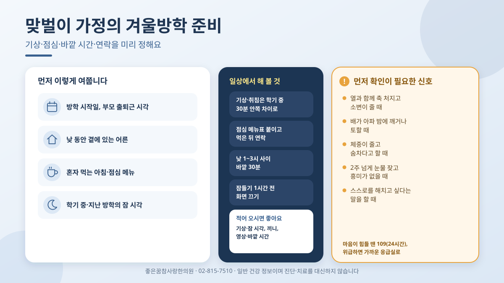

이종호 한의사 감수좋은꿈참사랑한의원 대표원장 (한의사 면허번호 19769)발행 2026-11-27 · 수정 2026-11-27
이 글의 차례
12월 중순이 지나면 "방학 동안 낮에는 어떻게 지내게 하지?" 하는 걱정이 맞벌이 부모의 마음을 무겁게 합니다. 학교마다 다르지만 대개 12월 말에서 1월 초 사이 겨울방학이 시작되면, 등교 시간과 급식, 쉬는 시간 바깥 놀이처럼 학교가 대신 지켜 주던 하루의 틀이 한꺼번에 사라집니다.
부모가 출근한 뒤 늦잠을 자고, 아침과 점심을 과자나 컵라면으로 때우고, 학원 사이 빈 시간을 영상으로 채우다 보면 저녁 식사와 잠자리 시각이 점점 밀리고, 방학 2주 만에 밤낮이 바뀌는 일도 흔합니다. 이런 흐트러짐은 아이의 의지가 약해서라기보다 하루를 붙잡아 줄 틀이 없어서 생기는 경우가 많습니다.
방학을 2~3주 앞둔 지금 아이와 함께 기상·취침 시각, 혼자 먹는 점심, 바깥에 나가는 시간, 부모와 연락하는 시각을 정해 두면 방학 첫 주를 훨씬 덜 흔들리게 시작할 수 있습니다.
다만 아이가 방학 전부터 늘 기운이 없고, 배나 머리가 아프다는 말이 잦거나, 잠과 식사가 크게 줄거나 늘었다면 생활 계획만으로 넘기지 말고 소아청소년과 진료부터 받아 보시는 편이 좋습니다.
왜 맞벌이 가정은 방학에 아이의 리듬이 더 쉽게 흐트러질까요
- 학기 중에는 '8시 40분 등교'처럼 꼭 일어나야 하는 이유가 있습니다. 방학에는 이 이유가 사라지는데, 부모가 먼저 출근하면 아침에 깨워 줄 사람도 없어 기상 시각이 하루하루 늦어집니다.
- 급식은 매일 정해진 시각에 따뜻한 밥과 국, 반찬을 차려 주던 끼니였습니다. 방학에는 혼자 먹는 점심을 아이가 챙겨야 하는데, 배가 고프지 않으면 거르고, 배가 고프면 손쉬운 과자와 라면, 단 음료로 해결하기 쉽습니다.
- 학교에서는 쉬는 시간과 체육 시간에 몸을 움직이고 바깥 빛을 받았습니다. 집에만 있으면 낮에 받는 빛과 움직임이 크게 줄어 밤에 졸음이 늦게 오고 잠이 얕아질 수 있습니다.
- 학원 시간은 요일마다 다르고, 방학 특강으로 시간표가 바뀌기도 합니다. 점심을 늦게 먹고 학원에 갔다가 저녁을 8~9시에 먹는 날이 생기면 잠자리 시각도 함께 밀립니다.
- 혼자 있는 시간에는 영상과 게임이 시간을 채우기 쉽습니다. 시간 가는 줄 모르고 보다 보면 몸은 늘어지고, 밤에는 머리가 깨어 잠들기 어려워집니다.
- 부모는 낮 동안 함께하지 못한 미안함에 저녁에 아이와 오래 놀아 주거나, 늦게까지 이야기를 나누다 잠자리가 늦어지기도 합니다.
- 추운 날씨도 한몫합니다. 상도동처럼 언덕이 많은 동네는 빙판길 걱정에 바깥에 내보내기가 망설여지고, 아이도 따뜻한 집 안에만 머물려 합니다.
- 한의학에서는 아이를 하루 리듬과 먹는 것에 따라 기운이 빠르게 흔들리는 때로 봅니다. 그래서 잠과 끼니, 바깥 활동이 함께 무너지면 입맛 저하, 배앓이, 피로가 연달아 나타날 수 있어 셋을 묶어서 살핍니다.

방학 리듬의 흐트러짐인지, 따로 살필 문제인지 나눠 볼까요
- 방학 리듬이 흐트러진 경우라면 주말이나 부모가 집에 있는 날에는 비교적 제시간에 먹고 자며, 시간표를 다시 잡아 주면 1~2주 사이에 조금씩 돌아옵니다.
- 방학 전부터 쉽게 지치고 핏기 없이 창백해 보이며, 계단을 오를 때 숨이 차다고 한다면 빈혈처럼 확인이 필요한 부분이 있는지 소아청소년과에서 살펴봅니다.
- 배가 아프다는 말이 일주일에 여러 번 반복되고 밤에 배가 아파 깨거나, 체중이 줄었다면 생활 리듬과 별개로 진료가 필요합니다.
- 친구를 만나기 싫어하고 좋아하던 일에도 흥미가 없으며, 말수가 크게 줄고 짜증이나 눈물이 잦아졌다면 마음이 지친 상태인지 함께 살펴야 합니다.
- 자면서 코를 심하게 골거나 숨을 멈추는 듯하고, 낮에 졸음이 많다면 잠자는 동안의 숨길 문제도 확인합니다.
먼저 이렇게 여쭙니다
- 방학이 언제 시작되고, 부모님은 몇 시에 출근하고 몇 시에 돌아오시나요?
- 낮 동안 아이 곁에 있어 줄 어른이 있나요? 조부모님이나 돌봄 기관, 학원 가운데 어디에서 시간을 보내는지 여쭙니다.
- 학기 중 아이는 몇 시에 일어나고 몇 시에 잠드나요? 지난 방학에는 어떻게 바뀌었나요?
- 아침과 점심은 주로 무엇을 먹나요? 혼자 먹을 때 거르는 일이 있나요?
- 학원은 요일마다 몇 시에 시작하고 끝나나요? 저녁은 보통 몇 시에 먹나요?
- 하루에 영상이나 게임을 보는 시간은 어느 정도인가요?
- 낮에 밖에 나가 몸을 움직이는 시간이 있나요?
- 요즘 배앓이, 두통, 입맛 변화, 잦은 피로를 말한 적이 있나요?
- 아이가 혼자 있을 때 무서워하거나 불안해하는 모습이 있나요?

일상에서 먼저 해 볼 수 있는 것
방학 2~3주 전: 아이와 함께 하루 시간표 만들기
- 주말 저녁에 아이와 마주 앉아 방학 하루 시간표를 함께 만듭니다. 부모가 정해서 건네기보다 아이가 직접 쓰고 그리면 지키려는 마음이 커집니다.
- 기상 시각은 학기 중보다 30분 안쪽으로만 늦춥니다. 학기 중 7시에 일어났다면 방학에는 7시 30분을 넘기지 않도록 정합니다.
- 취침 시각도 학기 중과 30분 안쪽 차이로 정합니다. 초등학생이라면 밤 9시 반에서 10시 사이, 중학생이라면 늦어도 11시 전을 기준으로 삼아 봅니다.
- 시간표는 크게 써서 냉장고나 현관에 붙여 두고, 하루를 마치면 지킨 칸에 스티커나 표시를 합니다.
- 시간표에는 공부와 학원만이 아니라 '바깥에 나가는 시간', '쉬는 시간', '영상 보는 시간'도 함께 적습니다. 쉬는 시간이 정해져 있으면 영상이 다른 시간까지 번지는 일이 줄어듭니다.
아침: 부모 출근 전 10분
- 부모가 집을 나서기 전에 아이를 깨워 함께 아침을 먹는 것이 가장 좋습니다. 어렵다면 출근 전 아이 방 커튼을 열고 조명을 켜 두어 빛으로 먼저 깨웁니다.
- 아침거리는 전날 밤에 식탁 위에 준비해 둡니다. 주먹밥, 삶은 달걀, 바나나, 데우지 않아도 되는 두유나 우유처럼 꺼내 먹기만 하면 되는 것이 좋습니다.
- 아침을 먹고 나면 빈 그릇 사진이나 짧은 문자를 보내기로 약속합니다. 확인이 아니라 하루를 시작하는 인사처럼 가볍게 주고받습니다.
점심: 혼자 먹는 점심을 미리 정해 두기
- 요일별 점심 메뉴표를 아이와 함께 정해 냉장고에 붙입니다. 아이가 먹고 싶은 것을 한두 가지 넣으면 거르는 일이 줄어듭니다.
- 아이 나이에 맞게 불과 칼을 쓰지 않는 메뉴로 정합니다. 아침에 보온 도시락에 담아 둔 밥과 국, 전날 만들어 둔 반찬처럼 꺼내서 먹을 수 있는 것이 좋습니다. 전자레인지는 아이가 안전하게 쓸 수 있는지 미리 함께 연습해 봅니다.
- 컵라면과 과자는 '점심 대신'이 아니라 '가끔 먹는 간식'으로 정하고, 집에 쌓아 두는 양을 줄입니다.
- 점심은 12시에서 1시 사이로 시각을 정해 두고, 점심을 먹었다는 연락을 그때 주고받습니다.
- 학교 돌봄교실이나 지역 돌봄 기관의 방학 중 운영 여부와 점심 제공 여부는 곳마다 다르니, 방학 전에 학교와 주민센터에 미리 확인해 둡니다.
낮: 해가 있을 때 바깥에 나가기
- 하루에 한 번, 해가 가장 따뜻한 낮 1시에서 3시 사이에 30분 정도 밖에 나가는 시간을 시간표에 넣습니다. 학원 가는 길을 조금 돌아 걷거나, 친구와 동네 놀이터나 상도근린공원에 다녀오는 식입니다.
- 빙판길이 걱정되는 날은 미끄럼 방지 밑창 신발을 신고, 언덕 골목 대신 평지 길로 다니도록 함께 길을 정해 둡니다.
- 밖에 나가기 어려운 날에는 매트를 깔고 제자리 뛰기나 스트레칭처럼 몸을 쓰는 시간을 10~15분 넣습니다. 아래층 이웃을 생각해 뛰는 시간은 짧게 합니다.
- 초등학생이라면 낮잠은 필요하지 않은 경우가 많습니다. 너무 졸려 하면 오후 3시 전에 20분 안쪽으로만 눕게 합니다.
영상과 게임: 시간과 장소를 정하기
- 영상은 하루 총 시간을 정하고, 타이머를 맞춰 아이 스스로 끄도록 합니다. 휴대폰의 자녀 보호 기능으로 사용 시간을 함께 정해 두는 것도 방법입니다.
- 영상은 거실에서 보고, 침대 위에서는 보지 않기로 약속합니다.
- 저녁 식사 뒤에는 영상을 새로 시작하지 않습니다.
저녁: 부모 귀가 뒤 두 시간
- 저녁은 7시 전후로 먹는 것을 기본으로 합니다. 학원이 늦게 끝나는 날은 학원 가기 전에 주먹밥이나 고구마처럼 든든한 것을 조금 먹고, 돌아와서는 가볍고 따뜻한 국과 밥으로 마무리합니다.
- 함께하지 못한 낮의 미안함은 늦게까지 노는 시간보다 잠들기 전 15분 이야기나 책 읽기로 채웁니다. "오늘 가장 재미있었던 일"과 "내일 할 일 하나"를 나누면 하루를 정리하기 좋습니다.
- 잠자리 한 시간 전에는 집 안 조명을 낮추고 화면을 끕니다. 부모도 그 시간에는 휴대폰을 내려놓습니다.
연락과 안전 약속
- 하루 연락 시각을 정해 둡니다. 예를 들어 아침 먹은 뒤, 점심 먹은 뒤, 학원 출발과 도착 때 짧게 연락하기로 합니다.
- 부모, 가까운 친척, 이웃 가운데 연락이 닿는 어른의 번호를 냉장고에 붙여 둡니다.
- 혼자 있을 때는 누가 와도 문을 열지 않고, 가스레인지는 쓰지 않으며, 몸이 안 좋으면 바로 연락하기로 약속합니다.
주말: 방학이라도 같은 리듬
- 주말에도 방학 평일 시간표와 기상 시각을 크게 바꾸지 않습니다. 늦잠은 1시간 안쪽으로만 허락합니다.
- 주말 하루는 가족이 함께 바깥에서 오전을 보내며 한 주 동안 지낸 이야기를 나눕니다.
상황별 예시
- 예를 들어 초등학교 저학년 아이가 오전 내내 집에 혼자 있게 되는 경우, 아이가 시간을 스스로 꾸리기에는 아직 어려울 수 있습니다. 조부모님이나 돌봄 기관의 도움을 먼저 알아보고, 어쩔 수 없이 혼자 있는 시간이 생긴다면 그 시간을 짧게 하고 연락 시각을 촘촘하게 정합니다.
- 예를 들어 초등학교 고학년 아이가 점심을 혼자 해결하다 보니 컵라면이나 과자로 때우는 날이 늘어난 경우, 저녁에 함께 다음 날 점심 도시락을 싸는 시간을 만들어 봅니다. 아이가 직접 고르고 담은 점심은 거르는 일이 줄어듭니다.
- 예를 들어 중학생 아이가 방학이 시작되자마자 새벽까지 게임을 하고 점심때 일어나는 경우, 처음부터 크게 다투기보다 기상 시각을 매일 15~30분씩 당겨 일주일 안에 원래 시각으로 돌아오도록 함께 정합니다. 휴대폰은 밤에 거실에서 충전하기로 약속합니다.
- 예를 들어 큰아이에게 낮 동안 동생을 맡기게 되는 경우, 큰아이가 끼니와 안전을 모두 책임지는 부담을 느끼기 쉽습니다. 동생의 점심과 간식은 부모가 미리 준비해 두고, 큰아이에게는 고맙다는 말과 함께 자기만의 시간을 따로 정해 줍니다.
자주 하는 오해
- "방학이니 실컷 자게 두자"고 여기기 쉽지만, 기상 시각이 크게 밀리면 밤잠도 함께 늦어져 개학 무렵 되돌리기가 더 힘들어집니다.
- 학원을 촘촘히 보내면 리듬이 저절로 지켜진다고 생각하기도 합니다. 학원 사이 끼니와 쉬는 시간이 비면 오히려 식사가 불규칙해지고 지치기 쉽습니다.
- 혼자 있는 아이에게 영상은 어쩔 수 없다고 여기기 쉽지만, 시간과 장소만 정해도 밤잠에 주는 영향을 줄일 수 있습니다.
- 낮에 함께 못 있으니 저녁에라도 오래 놀아 줘야 한다고 생각하는 분도 많습니다. 아이에게는 늦게까지 노는 시간보다 매일 같은 시각에 함께하는 짧은 시간이 더 든든할 수 있습니다.
- 부모가 모든 것을 확인해야 한다고 여기기도 하지만, 아이가 스스로 시간표를 지켰을 때 알아주는 말이 감시보다 더 오래 갑니다.
스스로 점검해 보세요
- 방학 동안 아이의 기상 시각을 아직 정하지 않았다.
- 아이가 혼자 먹을 점심 계획이 없다.
- 지난 방학에 아이가 점심을 거르거나 과자로 때운 날이 많았다.
- 학원이 끝나고 저녁을 밤 8시 넘어 먹는 날이 있다.
- 아이가 하루에 영상이나 게임을 세 시간 넘게 본다.
- 낮에 아이가 밖에 나가는 시간이 거의 없다.
- 부모가 귀가한 뒤 아이의 잠자리 시각이 자꾸 늦어진다.
한의원에서 함께 살필 수 있는 경우
- 방학 전후로 입맛이 떨어지고 끼니를 자주 거르는 경우
- 배가 아프다는 말이 잦은데 소아청소년과에서 큰 이상은 없다고 들은 경우
- 잠드는 데 오래 걸리고 아침에 일어나기 힘들어하며 낮에 늘어지는 경우
- 손발이 차고 추위를 많이 타며 감기에 자주 걸리는 경우
- 방학 동안 키와 체중, 생활 리듬을 함께 점검해 보고 싶은 경우
좋은꿈참사랑한의원에서는 첫 방문 때 보호자와 아이에게 학기 중과 방학의 하루가 어떻게 다른지, 끼니와 간식, 잠, 바깥 활동, 화면 시간을 먼저 천천히 여쭙고, 맥부터 짚어 봅니다. 아이가 긴장하지 않도록 짧게 진맥한 뒤 배를 살며시 만져 보고, 혀의 색과 모양, 손발 온도, 대변 상태도 함께 확인합니다.
키와 체중은 기록해 두었다가 다음 방문 때 비교합니다. 그 뒤 집에서 바꿔 볼 순서와 한의원에서 함께 살필 순서를 보호자와 정하고, 다음 진료에서는 지난번 말씀하신 기상 시각과 끼니, 배앓이를 이어서 여쭈어 변화를 비교합니다.
방학에는 평일 낮 시간에도 진료를 받을 수 있어 학기 중보다 시간을 잡기 수월한 경우가 많고, 보호자 동반 여부 등 자세한 사항은 방문 전 전화로 확인해 주세요.
얼마나 지켜보고 언제 상담할까요
- 시간표와 점심 계획, 연락 약속을 정한 뒤 방학 첫 1~2주는 기록하며 지켜봅니다. 처음 며칠은 들쭉날쭉해도 틀이 있으면 조금씩 자리를 잡는 경우가 많습니다.
- 2주가 지나도 기상과 잠자리 시각이 계속 밀리고, 끼니를 거르는 날이 일주일에 서너 번 넘게 이어진다면 진료를 받아 함께 살펴보시길 권합니다.
- 배앓이나 두통을 자주 말하거나 입맛이 눈에 띄게 줄었다면 기간을 기다리지 않고 소아청소년과 진료를 먼저 받아 보세요.
- 아이가 혼자 있는 시간을 많이 힘들어하거나 마음이 지쳐 보인다면 돌봄 방법부터 다시 함께 정합니다.
이렇게 기록해 오시면 상담이 쉬워집니다
- 날짜별 기상 시각과 잠든 시각
- 세 끼와 간식으로 먹은 것, 거른 끼니
- 학원 시간과 저녁 먹은 시각
- 하루 영상·게임 시간과 바깥에 나간 시간
- 배앓이, 두통, 피로를 말한 날과 그때의 상황
- 키와 체중, 대변 횟수와 모양, 복용 중인 약
이런 증상은 먼저 확인이 필요합니다
- 열이 나면서 축 처지고 잘 먹지 못하거나, 소변이 눈에 띄게 줄어든 경우
- 배가 아파 밤에 깨거나, 토하고 오른쪽 아랫배가 계속 아픈 경우
이런 신호가 있으면 한의원보다 가까운 병원이나 응급실을 먼저 찾으세요.
관련 글
- 겨울 방학 동안 아이의 생활 리듬이 무너질 때는 어떻게 하나요?
- 겨울방학이 끝나기 전 일주일 동안 아이의 생활 리듬을 어떻게 되돌릴 수 있나요?
- 학생이 방학에 진료를 받을 때는 시간을 어떻게 정하면 되나요?

여쭙는 것
- 방학이 언제 시작되고, 부모님은 몇 시에 출근하고 몇 시에 돌아오시나요?
- 낮 동안 아이 곁에 있어 줄 어른이 있나요? 조부모님이나 돌봄 기관, 학원 가운데…
- 학기 중 아이는 몇 시에 일어나고 몇 시에 잠드나요? 지난 방학에는 어떻게 바뀌었나요?
생활에서 해 볼 것
- 주말 저녁에 아이와 마주 앉아 방학 하루 시간표를 함께 만듭니다. 부모가 정해서 건…
- 기상 시각은 학기 중보다 30분 안쪽으로만 늦춥니다. 학기 중 7시에 일어났다면 방…
- 취침 시각도 학기 중과 30분 안쪽 차이로 정합니다. 초등학생이라면 밤 9시 반에서…
한의원에서 함께 살필 것
- 방학 전후로 입맛이 떨어지고 끼니를 자주 거르는 경우
- 배가 아프다는 말이 잦은데 소아청소년과에서 큰 이상은 없다고 들은 경우
- 잠드는 데 오래 걸리고 아침에 일어나기 힘들어하며 낮에 늘어지는 경우
먼저 확인이 필요한 신호
- 열이 나면서 축 처지고 잘 먹지 못하거나, 소변이 눈에 띄게 줄어든 경우
- 배가 아파 밤에 깨거나, 토하고 오른쪽 아랫배가 계속 아픈 경우
한눈에 보는 표
| 구분 | 핵심 |
|---|---|
| 여쭙는 것 | 방학이 언제 시작되고, 부모님은 몇 시에 출근하고 몇 시에 돌아오시나요? 낮 동안 아이 곁에 있어 줄 어른이 있나요? 조부모님이나 돌봄 기관, 학원 가운데 어디에서 시간을 보내는지 여쭙니다. |
| 생활에서 해 볼 것 | 주말 저녁에 아이와 마주 앉아 방학 하루 시간표를 함께 만듭니다. 부모가 정해서 건네기보다 아이가 직접 쓰고 그리면 지키려는 마음이 커집니다. 기상 시각은 학기 중보다 30분 안쪽으로만 늦춥니다. 학기 중 7시에 일어났다면 방학에는 7시 30분을 넘기지 않도록 정합니다. |
| 한의원에서 함께 살필 것 | 방학 전후로 입맛이 떨어지고 끼니를 자주 거르는 경우 배가 아프다는 말이 잦은데 소아청소년과에서 큰 이상은 없다고 들은 경우 |
| 먼저 확인이 필요한 신호 | 열이 나면서 축 처지고 잘 먹지 못하거나, 소변이 눈에 띄게 줄어든 경우 배가 아파 밤에 깨거나, 토하고 오른쪽 아랫배가 계속 아픈 경우 |
자주 묻는 질문
방학 기상 시각은 학기 중과 얼마나 차이 나도 괜찮을까요?
30분 안쪽으로 정해 두는 편이 좋습니다. 차이가 크면 밤잠도 함께 밀려 개학 무렵 되돌리기 힘들어질 수 있습니다.
아이가 혼자 점심을 거르지 않게 하려면 어떻게 하나요?
요일별 메뉴표를 아이와 함께 정하고, 불과 칼을 쓰지 않고 꺼내 먹을 수 있는 점심을 전날 준비해 둡니다. 점심을 먹은 뒤 연락하기로 약속하면 거르는 일이 줄어듭니다.
혼자 있는 시간에 영상을 아예 못 보게 해야 하나요?
아예 막기보다 하루 총 시간과 보는 장소를 정하고, 저녁 식사 뒤와 침대 위에서는 보지 않기로 약속하는 편이 지키기 쉽습니다.
방학에 한의원 진료를 받으면 무엇을 살피나요?
끼니와 잠, 바깥 활동, 화면 시간을 먼저 여쭙고 맥부터 짚어 아이의 기운과 소화 상태를 살핍니다. 배와 혀, 손발 온도, 대변 상태를 함께 확인하고 키와 체중을 기록해 다음 방문 때 비교합니다.
어떤 경우에 소아청소년과에 먼저 가야 하나요?
열과 함께 축 처지거나 소변이 줄었을 때, 배가 아파 밤에 깨거나 토할 때, 체중이 줄거나 창백해 보일 때는 소아청소년과 진료가 먼저입니다. 숨쉬기 힘들어하면 가까운 응급실로 가세요.
좋은꿈참사랑한의원은 재진 때 지난번 이야기부터 이어서 여쭙니다. 진료시간과 예약은 오시는 길에서 확인하세요.
어디서 상담받을 수 있나요?
좋은꿈참사랑한의원은 서울 동작구 만양로2길 2 신성빌딩 3층·5층(서울 동작구 상도동, 7호선 상도역 3번 출구 근처)에 있습니다. 한의사 3명(이종호 대표원장, 조영기 수석진료원장, 정원영 진료원장)이 진료합니다. 진료시간은 평일 09:30~20:00(점심 13:00~14:00), 토·일·공휴일 09:30~15:00이며, 방문 전 전화로 확인을 권합니다. 예약은 네이버 예약, 카카오톡 상담, 전화 02-815-7510로 받습니다.
이 글은 일반적인 건강 정보이며 개인의 진단이나 치료를 대신하지 않습니다. 증상이 있거나 복용 중인 약이 있다면 진료를 통해 확인하세요. 치료 효과는 개인마다 다를 수 있습니다.
작성 기준: 일반적으로 알려져 있는 건강 정보를 참고해 정리했습니다(대표원장 감수). 증상 기록은 1~2주 동안 하루 1회, 비슷한 시간에 적어 오시면 지난 상태와 비교하기 쉽습니다.